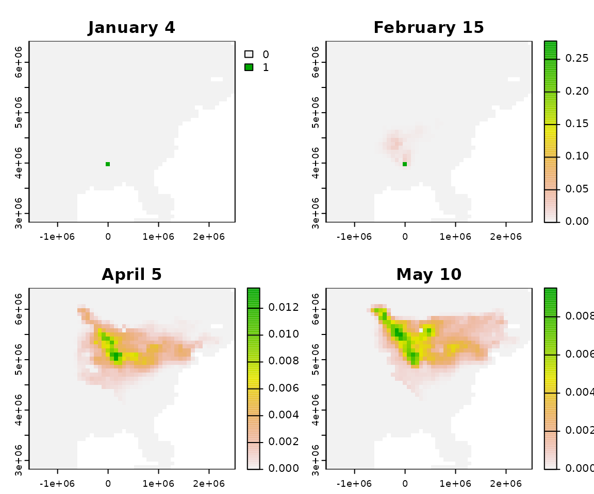

BirdFlowR
BirdFlowR.RmdSetup
Install packages
installed <- rownames(installed.packages())
if(!"remotes" %in% installed)
install.packages("remotes")
if(!"rnaturalearthdata" %in% installed)
install.packages("rnaturalearthdata")
remotes::install_github("birdflow-science/BirdFlowModels")
remotes::install_github("birdflow-science/BirdFlowR", build_vignettes = TRUE)Load libraries and define local BirdFlow model (bf)
Access basic information
dim(), nrow(), and ncol() all
report on raster dimensions associated with the model.
n_active is the total number of cells that the BirdFlow
model can route birds through and is a subset of the cells in the
raster.n_transitions() and n_distr() report on
temporal dimensions. If the model is circular than they will be equal,
for temporally linear models than n_distr() will be one
more than n_transitions().
# Methods for base R functions:
dim(bf)
#> [1] 45 51
c( nrow(bf), ncol(bf) )
#> [1] 45 51
bf # print(bf)
#> American Woodcock BirdFlow model
#> dimensions : 45, 51, 52 (nrow, ncol, ntimesteps)
#> resolution : 79995.7798343748, 79995.8424586389 (x, y)
#> active cells : 1706
#> size : 18.9 Mb
# BirdFlowR functions
n_active(bf)
#> [1] 1706
n_transitions(bf)
#> [1] 51
n_timesteps(bf)
#> [1] 52
# Contents
has_marginals(bf)
#> [1] TRUE
has_distr(bf)
#> [1] TRUE
has_transitions(bf)
#> [1] FALSESpecies information and metadata
species_info() and get_metadata() take a
BirdFlow object as their first argument. An optional second argument
allows specifying a specific item, if omitted a list is returned with
all the available information.
species(bf) is a shortcut for
species_info(bf, "common_name")
Use ?species_info() to see descriptions of all the
available information. Dates associated with migration and resident
seasons are likely to be useful.
species(bf)
#> [1] "American Woodcock"
species(bf, "scientific")
#> [1] "Scolopax minor"
species_info(bf, "prebreeding_migration_start")
#> [1] "2021-01-18"
si <- species_info(bf) # list with all species information
md <- get_metadata(bf) # list with all metadata
get_metadata(bf, "birdflow_model_date") # date model was exported from python
#> [1] "2023-01-02 10:03:05.256454"
validate_BirdFlow(bf) # throws error if there are problemsSpatial aspects
BirdFlow models are based on a raster representation of a time series of species distributions and contain all the spatial information necessary to recreate those distributions and to define how the raster is positioned in space. BirdFlowR uses the terra package to import raster data and provides BirdFlow methods for functions defined in the terra package - so that you can use those functions on BirdFlow objects.
crs() returns the coordinate reference system - useful
if you need to project other data to match the BirdFlow object.
res(), xres(), and yres()
describe the dimensions of individual cells in the model.
ext() returns a terra extent object.
# Methods for terra functions:
a <- crs(bf) # well known text (long)
crs(bf, proj = TRUE) # proj4 string
#> [1] "+proj=moll +lon_0=-90 +x_0=0 +y_0=0 +ellps=WGS84 +units=m +no_defs"
res(bf)
#> [1] 79995.78 79995.84
c( xres(bf), yres(bf) ) # same as res(bf)
#> [1] 79995.78 79995.84
ext(bf)
#> SpatExtent : -1564958.2138293, 2514826.55772382, 2822153.67510416, 6421966.58574292 (xmin, xmax, ymin, ymax)
c(xmin(bf), xmax(bf), ymin(bf), ymax(bf)) # same as ext(bf)
#> [1] -1564958 2514827 2822154 6421967Retrieve and plot distributions
A distribution in BirdFlow is stored as a vector of values that
correspond to only the active cells (n_active()) in the
model. Multiple distributions are stored as matrices with
n_active() rows (a column for each distribution).
We can retreive distributions in this format with
get_distr(). Use timestep, character dates, date objects,
or “all” to specify which distributions to retrieve.
Retrieve the first distribution and compare its length to the number of active cells.
d <- get_distr(bf, 1) # get first timestep distribution
length(d) # 1 distribution so d is a vector
#> [1] 1706
n_active(bf) # its length is the the number of active cells in the model
#> [1] 1706Get 5 distributions, the result is a matrix in which each column is a distribution with a row for each active cell.
d <- get_distr(bf, 26:30)
dim(d)
#> [1] 1706 5
head(d, 3)
#> time
#> i June 28 July 5 July 12 July 19 July 26
#> [1,] 0 0 0 0 0
#> [2,] 0 0 0 0 0
#> [3,] 0 0 0 0 0We can also specify distributions with dates, or use “all” to retrieve all the distributions.
d <- get_distr(bf, "2022-12-15") # from character date
d <- get_distr(bf, "all") # all distributions
d <- get_distr(bf, Sys.Date()) # Using a Date object Use rasterize_distr() to convert a distribution to a
SpatRaster defined in the terra package. The second argument, the
BirdFlow model, is needed for the spatial information it contains.
d <- get_distr(bf, c(1, 26)) # winter and summer
r <- rasterize_distr(d, bf) # convert to SpatRaster Alternatively convert directly from BirdFlow to SpatRast with
rast() the second, optional, argument which
accepts the same inputs a as which in
get_distr().
BirdFlowR provides some convenience wrappers to functions in rnaturalearth that load vector data and then crop and reproject it to make it suitable for plotting with BirdFlow output.
r <- rast(bf, species_info(bf, "prebreeding_migration_start"))
plot(r)
coast <- get_coastline(bf) # lines
plot(coast, add = TRUE)Forecasting
In this section we will sample a single starting location from the winter distribution and project it forward to generate a distribution of predicted breeding grounds for birds that wintered at the starting location.
Set forecast parameters.
start <- 1 # winter
end <- 26 # summerSample starting distribution
sample_distr() will sample from one or more input
distribution to select a single location per distribution. The result is
one or moe distributions with ones in the selected location(s) and zero
elsewhere.
set.seed(0)
d <- get_distr(bf, start)
location <- sample_distr(d)
print( i_to_xy( which( as.logical(location) ), bf) ) # starting coordinates
#> x y
#> [1,] -5040.507 3982093Project forward from this location to summer
Forecast returns the distribution over time as a matrix with one column per timestep.
The plot shows where birds that winter at a particular location are likely to be as the year progresses and ultimately where they might spend their summer. The probability density spreads as the weeks progress.
f <- forecast(bf, location, start, end, "forward")
r <- rasterize_distr(f[, c(1, 7, 14, 19)], bf)
plot(r)
Alternatively we can calculate the difference between the projected distribution for bird’s wintering at that particular location and the distribution of the species as a whole at the same timestep.
projected <- f[ , ncol(f)] # last projected distribution
diff <- projected - get_distr(bf, end)
plot(rasterize_distr(diff, bf))
Generate synthetic routes
In this section we sample locations from the American Woodcock winter distribution and then generate routes to their summer grounds.
Set route parameters.
n_positions <- 15 # number of starting positions
n_each <- 1 # how many birds to start at each
start <- 1 # starting timestep (winter)
end <- 26 # ending timestep (summer)Generate starting locations
First extract the winter distribution, then use
sample_locations() with n = n_positions to
sample the input distribution repeatedly resulting in a matrix in which
each column has a single 1 representing the sampled location.
d <- get_distr(bf, start)
locations <- sample_distr(d, n = n_positions) Collapse the locations down to a vector of the index of each non-zero value and then convert to x and y coordinates.
ind <- apply(locations, 2, function(x) which( as.logical(x) ) )
x <- i_to_x(ind, bf)
y <- i_to_y(ind, bf)Plot the starting (winter) distribution and sampled locations
winter <- rasterize_distr(d, bf)
plot(winter)
points(x, y)
Generate routes
route() will generate synthetic routes for each starting
position. Currently route() returns a list with two items
(this may change):
-
pointsa data.frame with a row for each timestep of each route -
linessf object containing a line for each route
Plot routes
Plot the route lines over the summer distribution along with points at the starting and ending positions.
d <- get_distr(bf, end)
summer <- rasterize_distr(d, bf)
line_col <- rgb(0, 0, 0, .2)
pt_col <- rgb(0, 0, 0, .5 )
plot(summer)
points( x, y, cex = .4, col = pt_col, pch = 16) # starting points
plot(rts$lines, add = TRUE, col = line_col) # routes
end_pts <- rts$points[rts$points$timestep == end, ] # end points
points(x = end_pts$x, y = end_pts$y,
cex = 0.4, pch = 12, col = pt_col )
title(main = species(bf))